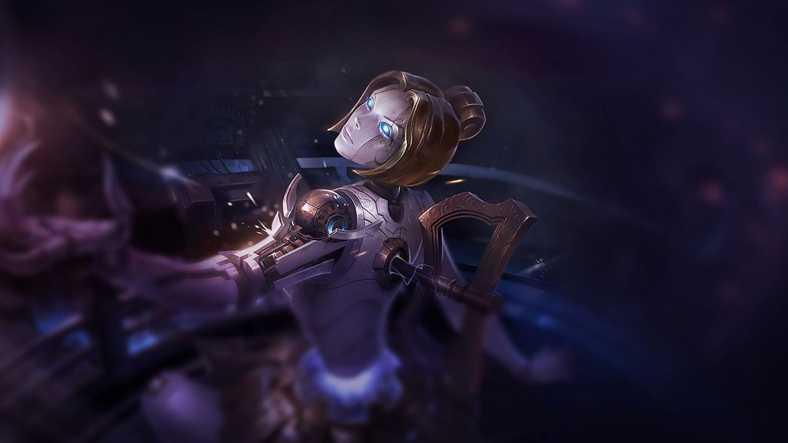
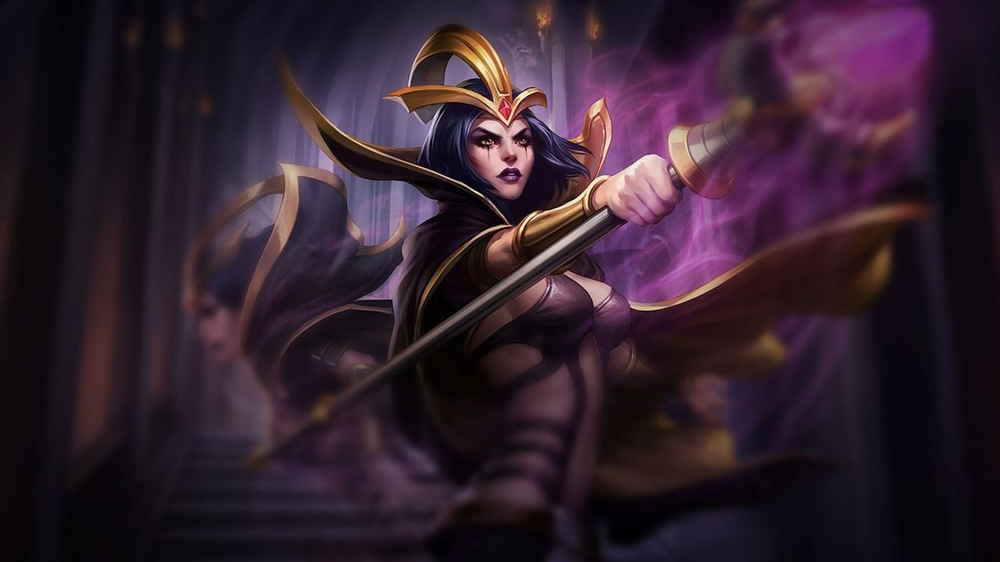

Orianna

Orianna is a mage that excels in team fights due to her ultimate ability and high burst. When it comes to playing Orianna
well and to her full potential, it is all about understanding her range as well as timing her ultimate correctly. In laning phase,
Orianna does pretty well due to being a ranged mage and can easily farm and poke out her opponent.
LeBlanc

LeBlanc is a ranged mage assassin and can one shot squishy champs fairly easily. In teamfights it is ideal for a LeBlanc to be able to
get a pick on a more squishy enemy champion and come out without a scratch. LeBlancs high burst makes her hard to deal with in lane
making her able to comfortably farm up minions and roam for free kills due to her high mobility.
Kassadin

Kassadin is a melee mage assassin who has a ton of burst damage especially late game. In the early game, Kassadin struggles
a lot due to being melee, therefore it is ideal to go runes that allow for higher sustain so that Kassadin will be able
to survive the early game and scale into the late game. If Kassadin gets to the late game, it is basically over for the
enemy team due to his high scaling and ability to one shot everyone with low cooldowns on his abilities.